经验心得
VSCode调试Python期间，有些需要注意的事情和一些心得，整理如下。
注意事项
不要轻易根据提示切换Python版本
之前遇到python文件中顶部有常见的写法：
#!/usr/bin/python
# -*- coding: utf-8 -*-
其中第一行是建议的Python解释器的位置
对此，VSCode的Python插件自动检测处理，然后给出提示Set as interpreter
你如果点击了：
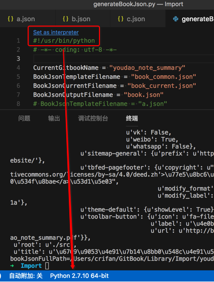
则就可以从当前的解析器：
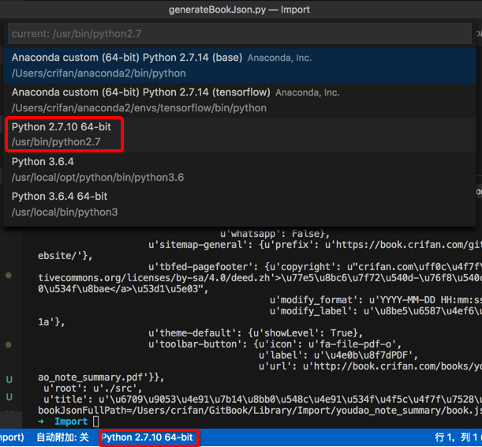
换成代码中设置的解析器了：
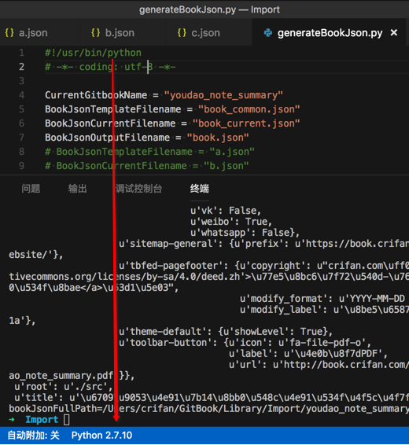
而这往往并不是你所想要的Python版本。
所以：还是要事先设置好自己想要的Python版本，而不要轻易（以为VSCode很智能，根据其提示）去更换了你的Python版本。
调试适配器进程意外终止
【已解决】VSCode调试Python出错：调试适配器进程意外终止Cannot read property 'style' of undefined
文件内容改动后断点错位
有时候会遇到：当前面新增行后，后面的断点位置都移动了，错位了。
比如此处，前面新增了2行，导致后面的，之前设置的断点，都错位了，无效了：
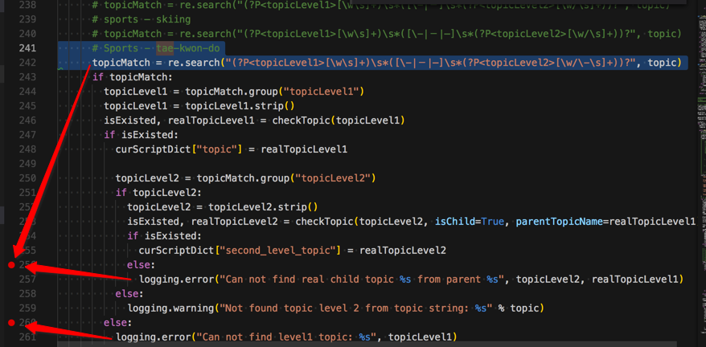
只能再：去掉之前断点，重新打断点：
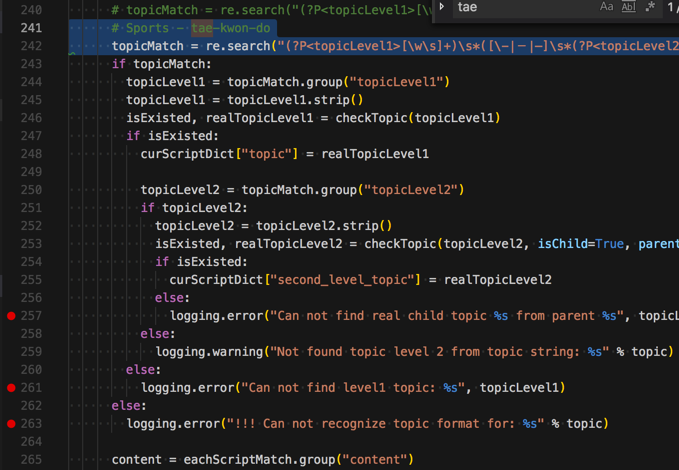
所以还是有点点麻烦的
-》而PyCharm就可以很好的支持：当代码改动（不多）的时候，可以自动保持原有的断点的位置。
-》不过后来也发现，此问题只是偶尔发生的。有时候代码改动后，断点还正常的。
心得
安装了虚拟环境后提示你切换到对应版本
对于某个Python项目，在：
pipenv install
安装了虚拟环境后，重新用VSCode打开该项目，会提示你：
You have selected the macOS system install of Python, which is not not recommended for use with the Python extension. Some functionality will be limited, please select a different interpreter.
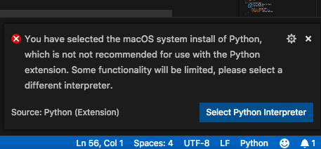
然后点击Select Python Interpreter，去选择刚装好的虚拟环境中的python：
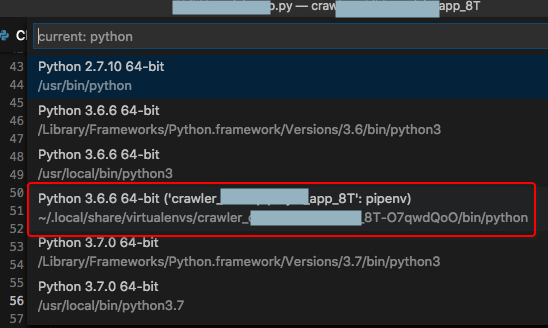
选择后，左下角就可以显示出当前所选Python了：
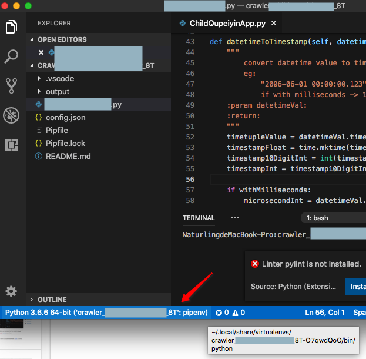
说明VSCode的Python插件还是很智能的，提示你新切换Python版本到你所安装的虚拟环境的版本。
鼠标移动上去可以查看变量值
后来又多次使用VSCode去调试Python：
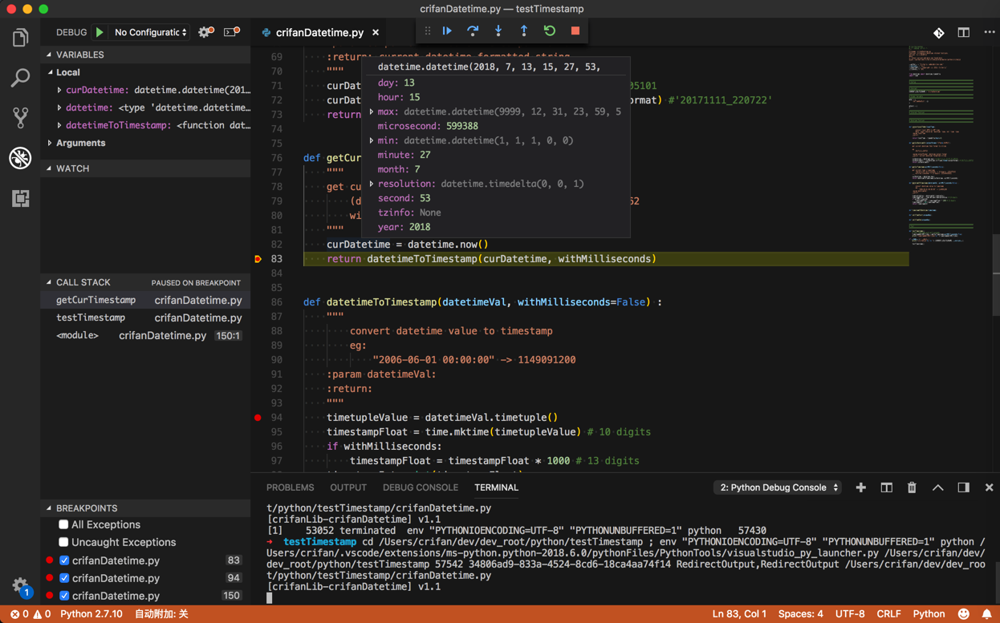
鼠标移动到变量（类）的属性上，支持（直接）显示变量的属性的值：
比如datetime
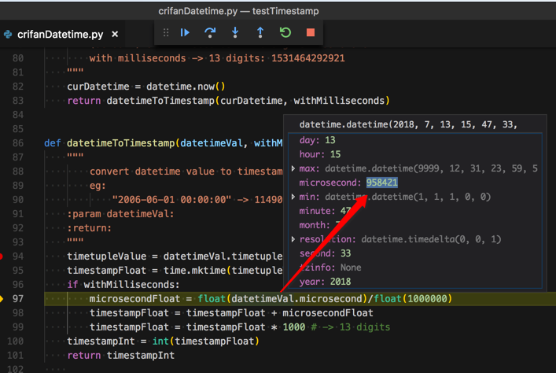
的microsecond：
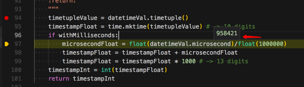
而这类功能，之前只有比较高级的IDE，比如Visual Studio，PyCharm等才支持。
支持异常信息的显示
当调试代码时发生异常，则可以方便快速的显示异常堆栈错误信息：
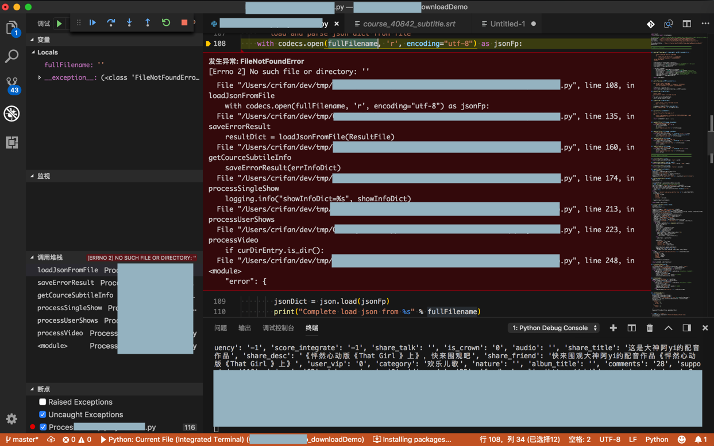
且可以点击左下角的 调用堆栈，调转到对应代码位置：
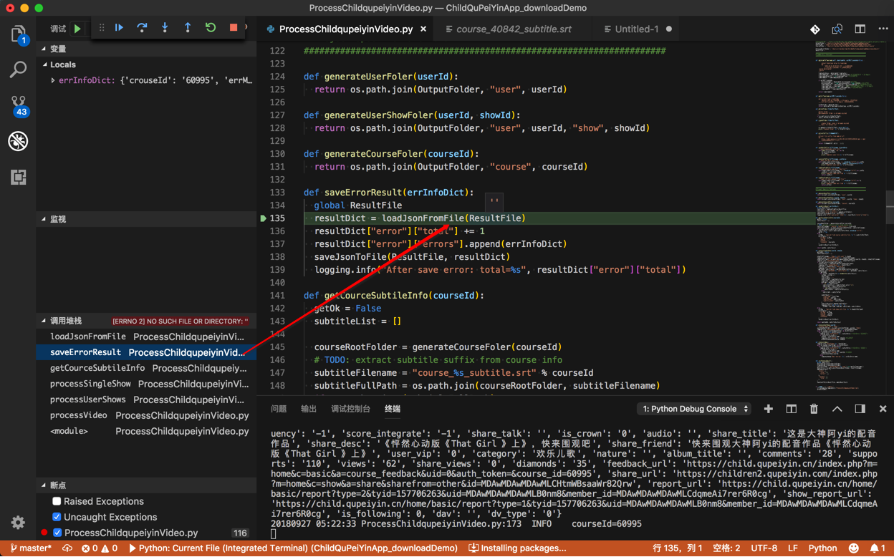